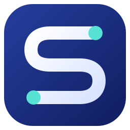
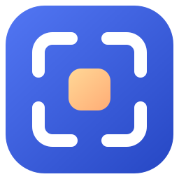
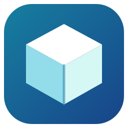

SPACETALLY / ROUND 02
第二批 Icon 方案
这次避开上一批的空间分块、环形扫描和柱状统计，分别探索字母、定位与体积三个方向。

D / MONOGRAM
路径 S
用一条连续的 S 形路径表达“逐层探索空间”。两端的青色点让路径有明确起止，适合做品牌标记。
64 / 32 / 16

E / FOCUS
聚焦窗口
四角组成取景框，中间的暖色方块代表找到的异常占用。构图更简洁，强调“定位”。
64 / 32 / 16

F / VOLUME
立体空间
把抽象磁盘占用画成一个有体积的模块。青蓝色与前两批拉开距离，视觉感更偏桌面工具。
64 / 32 / 16